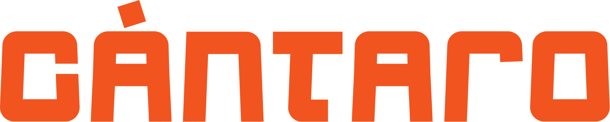
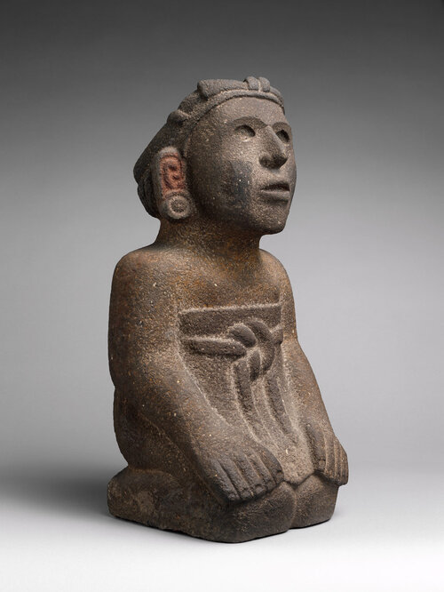
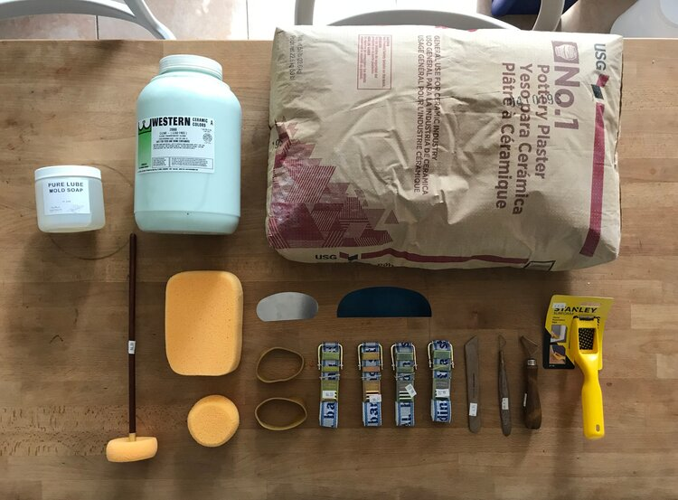
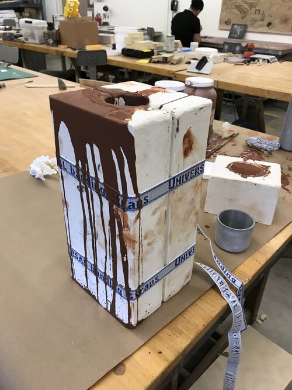
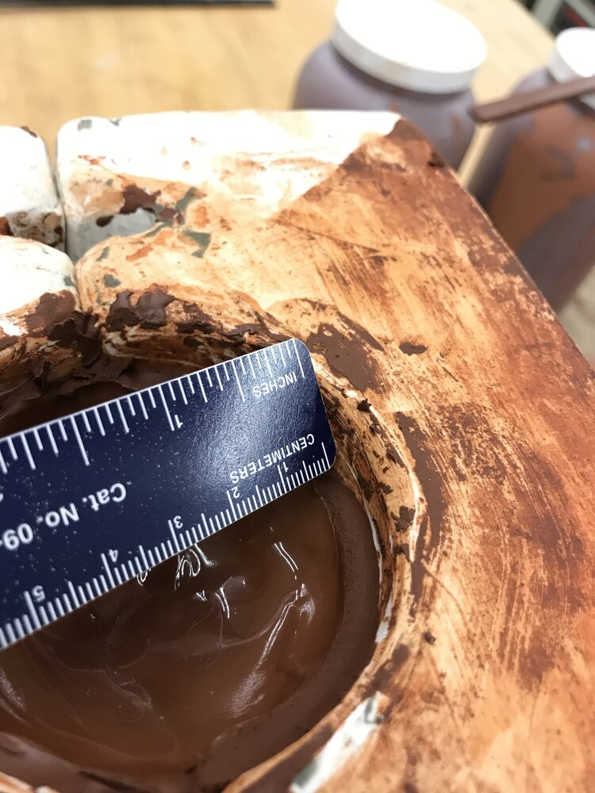
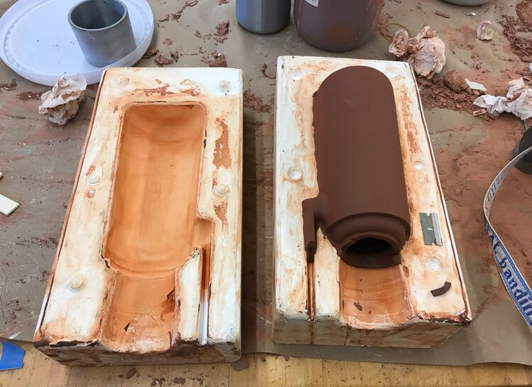
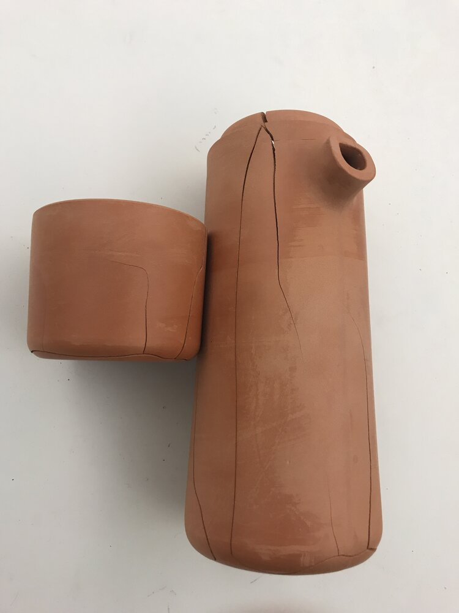
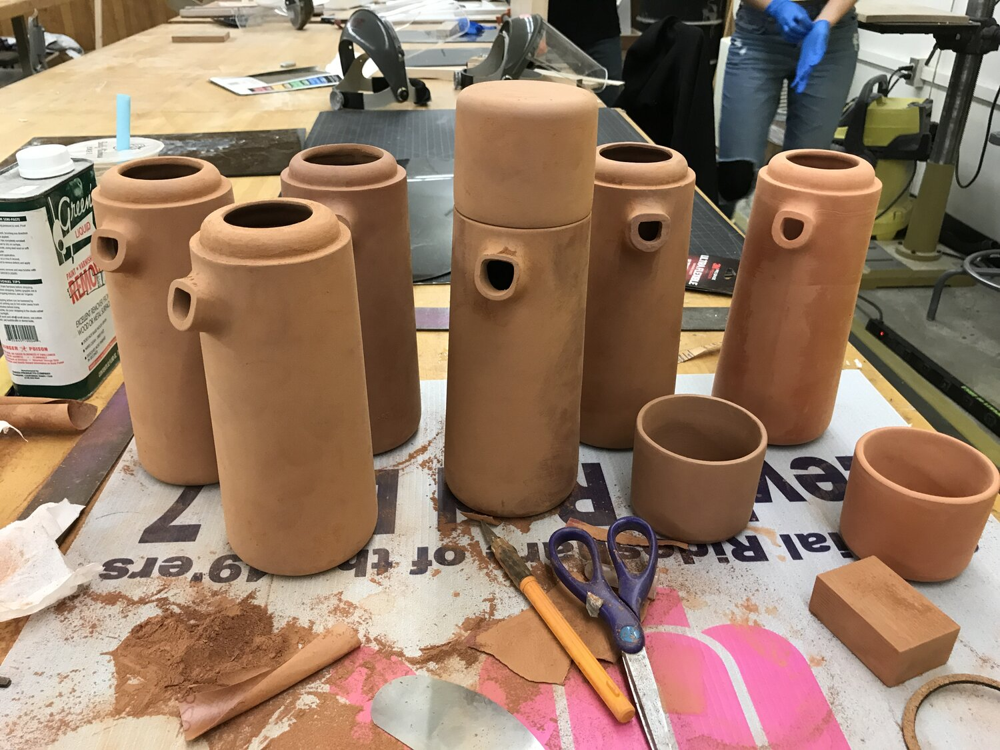
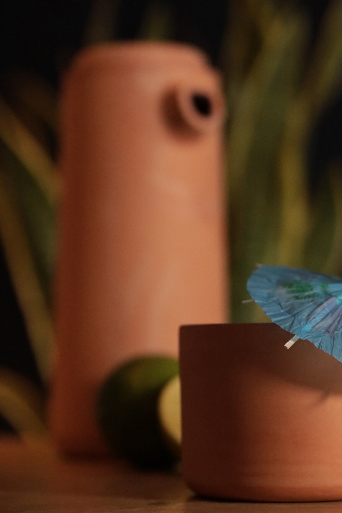
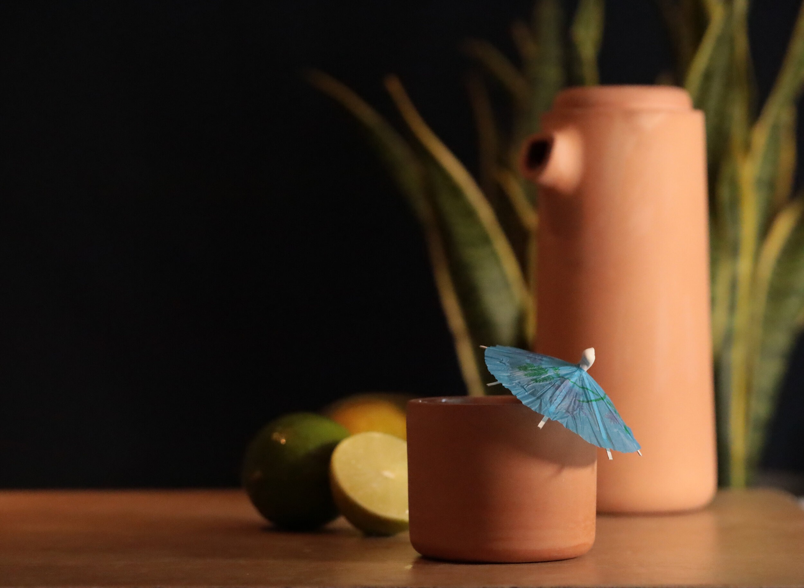

A ceramic project that merges modern and ancient fabrication processes. This personal project was done while contemplating the universal tie that all cultures once had to clay and is an homage to ancient technology. Most surprisingly, ceramic can function as a low tech passive water cooler if the right porosity is achieved.
00
The Origins of Cántaro
Cántaro is a personal project I conceived of in 2020. It was in a way an opportunity to fast from virtual technology by focusing on a more tactile creative experience. During the instability of 2020, conversation about the delicacies of supply chains and the challenges of a pandemic placed me in an existential creative mindset. I contemplated what it means to be human.
2020 was my graduation year and the job market was focused on reduced funding for R&D and Creative teams in preparation for a recession. The question of what technology, skills and knowledge is most resilient was heavy on my mind? In addition AI was a growing topic of discussion, conversation about how the job market will evolve at an ever more rapid rate predicted that many jobs would become outdated at a faster rate. The number one employable skill of the future was predicted to be things like creativity and adaptability. But as we know, people become less adaptable with age as neuroplasticity decreases. Adaptability is often replaced with efficiency. So how will people in the future evolve as fast as the technology that tries to replace them? And is that the answer? Should humans we do our best to induce a faster human evolution in order to adapt to a digital ecosystem? Looking into the future I wondered what can I as a future father, teach my kids that will remain relevant by the time they reach adulthood?
Humanity’s Changing Role in a Technological World
As technology advances, the tactile connection between humans and their tools diminishes. Smooth touchscreens dominate our interactions, raising questions about their impact on the human psyche. With AI now replacing cognitive labor—just as machines replaced physical labor—there’s a growing concern about humanity’s future role. If labor and creativity become centralized, what will remain for the rest of humanity? Will we integrate AI into our very minds, altering the essence of being human?
Cántaro seeks to ground us in what feels timeless: the need for human connection and tactile experience. It is designed as a simple, understandable product that brings people together over a shared drink. Cántaro isn’t just a tool—it’s a reminder to slow down, disconnect from the hustle of modern life, and rediscover the joy of being present with others.
Nature, Fragility, and Technology
A camping trip provided me with a realization. Nature will be here much longer than humanity.
Nature has zero concern over political tensions. While our cities were placed on pause, nature continued to roar and grow. It remained the same. I found a sense of peace as I contemplated the understandable cycle of nature. My peace only lasted a brief moment as a thunderstorm ensued. The hiking trail quickly transformed into a flooded stream as I hiked back to my vehicle for safety. The lightning appeared to be just far enough in an adjacent mountain but the immediate sense of my fragility was apparent, much more than Covid or Political Instability imposes. The previous year we had experienced the largest forest fires in the history of California due to a thunderstorm. For the first time I felt small in the forest, I felt that I shrank from apex human predator to a prey animal.
While technology has freed us from nature’s daily threats, it has created abstract threats that are much harder to predict or know how to escape. Our cities protect us from natural dangers but introduce new vulnerabilities. like supply chain collapse, pollution, war, recessions to name a few.
There's no question that nature is harsh on us, but the cycles and the behavior is more predictable. You can learn to watch out for danger and have a plan to escape it.
The Symbolism of Clay
Cántaro pays homage to humanity’s ingenuity—our ability to create technologies that ensure our survival. Clay, one of the most abundant and moldable materials in history is one of the most ancient forms of technology. Clay artefacts have stored knowledge of the views, culture and stories of the past. It has has served as a partner to humanity, enabling shelter, food storage, aqueducts, and cooking tools. Clay has allowed us to preserve resources, sanitize food, and adapt nature to our needs. It has easily conformed to our will and imprinted our thoughts across cultures.
This simplicity and utility stand in contrast to today’s hyper-complex technology. In modern times, we rely on tools we don’t fully understand, repair, or control. While smartphones have replaced countless tools—from maps to clocks, from books to wallets—they lack the grounding tactile experience of physical tools. Clay, by contrast is as physical and tactile as it gets. In some ways, it is the opposite of electronics and in other ways it has made electronics possible due to it's insulative properties that block the flow of electricity. The first battery is believed to have been made with clay pots filled with acid and metal.
Inspiration
Modern & Ancient
Modern life has it’s perks but in a fast paced world, we forget to slow down, relax and connect with those we love. Inspired by the discoveries of ancient humans, Cántaro seeks to ground us by connecting with each other over a drink and a shared connection to our origins. Clay expresses this through the natural materials, textures, colors and rich history.

Small Batch Fabrication
Trial & Error
Good design involve conducting extensive research on the user experience of all stakeholders involved in a product. This project was an exercise in understanding the fabrication process of a product produced in series. Data was gathered on every step and it's pain points. Further development of this project would include designing ways to make each step as efficient and error free as possible. Many calculations were refined in order to produce consistent batches of product.






Hero Shots
An Ancient way to keep cool.

